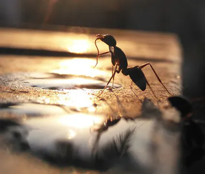

Солнце взойдёт - DDT
Rain
For my grandfather, Liu Changhe1.
雄关漫道真如铁，而今迈步从头越。从头越，苍山如海，残阳如血。
--- 毛泽东，《忆秦娥·娄山关》2
Story The First
It started pouring without rhyme or reason. Raindrops raced to the ground, forming puddles under the sky that had been clear just a minute ago. The sun hid its face behind a thin veil of cloud, peeking, occasionally, and hoping, like a naughty child, that people would forget it existed if it covered itself. The sun’s lies remained visible as shadows on the ground, sharp beneath the rain, mocking those who had trusted it and could now do nothing but curse and scatter.
I was fortunate. I say so on two bases: first, I was luckily located right next to a house with a long, extended roof; second, a thought flashed through my mind at the exact right time, warning me that the sun was untrustworthy, and that I ought to seek cover as soon as the first droplets hit the ground. As such, when my peers covered their heads with backpacks and hoped, in vain, to get home before the rain completely drenched them, I had already picked my sanctuary.
The rain shall stop momentarily, I tell myself, secretly sneering at the people who decided to make a run for it. I need only to wait a moment before I can go home. No problem at all. Besides, what more can I do about it? Nothing – and that’s exactly right, I tell myself, allowing a breath of relief to escape me as a few more fortunate souls sought cover under my roof. In the sun's rays, the sweat, or perhaps rain, gleamed on their foreheads.
The air of the afternoon, densely packed with fried grease and exhaust fumes, sat neither comfortably within my lungs nor atop my skin. It was for this precise reason that I detested all kinds of moist weather. The slimy feeling of my skin, coupled with the difficulty of breathing and asthma, makes it impossible for me to understand the enjoyment others seem to display towards the rain. The mainstream argument in defence of the rain was simply the fact that it is aesthetic. However, none have ever been able to answer me further without resorting to ad hominem arguments as to exactly what parts of the rain are more beautiful than, say, the leaves of a tall tree glowing underneath bright sunlight, or the laughter of children playing in the snow under a distant, cold star.
In any case, my justified hatred of rain was only intensified as more people crowded under the roof. The smell of oily scalps, cigarettes, alcohol, dust, sweat, and everything there was to be associated with a crowd of office workers scraped against my lungs, which, pushed beyond their limits, finally snapped. Damaged and disappointed, they forewent all forms of negotiation, arguing for only pure oxygen this very instant, lest they summon the devil of asthma, which would close my bronchi and ensure our mutual destruction.
As threatening as they sounded, there was nothing I could do to satisfy their demand. Indeed, there was not much I could do at all but continue breathing in the oil and dust from the air. Hold on a moment, I told my own lungs, let’s be reasonable.
Just know you brought this upon yourself, it replied with a hoarse sigh.
The first phase of asthma is gasping. When the lungs' ultimatum is not met, the body closes its bronchi, and it suddenly becomes ten times more difficult to gather the oxygen needed. Therefore, extreme reactions and symptoms can be observed in the poor human who has to endure this process. As my friends would gladly recount, it would instantly cause me to open my mouth so absurdly wide, and to begin inhaling with such force, that it seems as though all the oxygen in the world could not satisfy my need for it.
And so, I burst out gasping among the crowd, clutching my throat, my chest vibrating violently. As testified to by almost every one of my friends, the sight of an asthma attack is quite terrifying, especially if one happens to be inexperienced with respiratory illnesses. It is like watching a fish struggling and writhing as it is dragged out of water, which, for most, is already terrifying enough. Naturally, the sight becomes ten times worse when the fish is replaced with a fully grown man who was perfectly well just a moment ago. Understandably, then, as I succumbed to the symptoms of asthma, the people immediately adjacent to me screamed and gasped as they witnessed its effects upon me, causing the crowd to shuffle like dominoes as every person attempted to gain space between themselves and whatever it was that plagued me.
The second phase of asthma arrives immediately after the first phase settles in. Due to the lack of oxygen, the limbs most distant from the heart, that is, the feet and hands, begin to feel numb. Simultaneously, muscles all across the body begin to weaken quickly for the same reason. In this case, the lack of strength in my arms and legs directly caused the files that I held tightly in my hand to escape my weakened grasp and fly onto the ground, and my feet to give out, bringing me to my knees near the curb, placing my head outside the protection of the roof, directly under the pouring rain.
With my mouth agape and my throat whistling, it was at this time that I finally began searching for my weapon. The devil of asthma hit me with such force and tremendous haste that I hardly realized the battle had already begun when its first two blows connected, forcing me to gasp and pant on the ground, reduced to nothing more than a victim begging for mercy. But the devil never spared good graces. I shuffled desperately in my pocket, feeling for the cylinder that would save my life. Coins, postage stamps, keys... Oh? …Nope, heart medicine…
Asthma squeezed my neck ever tighter. My head grew lighter as the oxygen failed to reach my brain, hands searched more quickly as survival instincts took control. Vision becoming blurred, ears ringing, I could feel the devil’s stinking breath upon my neck, hear it snickering by my ears – found it! Shoving the flat end of the inhaler into my mouth without so much as looking at it, I pressed the metallic cylinder with whatever strength I could still muster. As my next breath came gasping in, the mist of medicine reached my bronchi, relaxing them. A truce. The devil's grasp vanished with a vicious sigh.
Yet, my lungs still burned relentlessly from the lack of oxygen. The pain punched me heavily in the chest, then squeezed my throat to force as many coughs out of me as possible. My vision spun as a tinge of sweetness gathered at the back of my tongue, a taste I desperately swallowed. But the movement in my throat triggered another coughing fit, the pain returning in my chest, and the cycle started all over again.
It was several minutes later that my fit gradually decreased in intensity, as my lungs finally decided to reason with my consciousness. Finally, the air became only sparsely populated by the sounds of raindrops falling: the soft thud of drops in puddles, the ticking of rain against my flies, and the water dripping steadily from my forehead. Droplet after droplet, they drenched everything in their path and formed a puddle.
Through my blurry eyes, I was able to make out the white rectangles on top of the puddle. Scattered pieces of standard A4 print paper, with freshly printed experimental data. Left at the mercy of the wind, they drifted and collided against one another, boats in a tiny lake. I squirmed forward on the asphalt pavement and collected them, delicately, with shaking hands.
I can’t help but recall that one of the printers at the institute was notably worse than the rest. It was an old inkjet model. Sometimes, even without any interference, the ink would puddle and soak the page. Did I use the inkjet or the laser printer for the data? Going back to the institute and requesting another copy of the data would take days, days that I won’t be able to work, not to mention the quarantine tomorrow… The second printer from the left, I’m sure, was the inkjet, yet I can’t quite recall which one I sent the job to…
Leaning backwards to shield myself with the roof again, while wiping my head with my shirt, I could finally see much clearer, and – thank the Lord! It seemed as though the data was still sharp on the page – that is to say, so long as I can dry it out properly, of course. This is, no doubt, the best possible outcome given the circumstances. I would breathe a sigh of relief, but my burning lungs grunted uneasily, warning me against inhaling more of the thick, moist air.
However, as my sight became a bit clearer, I noticed a tiny detail: was that a black dot rolling on the page? A drop of water, perhaps, containing ink, that would smudge the entire page? I reached out desperately to control the damage. But… Wait, what? As my hands moved carefully to curl the soppy pages, the ink somehow denied the control of gravity and continued to climb upwards across the page, without leaving a trail behind either.
I squeezed my eyelids tight and rubbed my eyes vigorously. My retina reflected six tiny legs protruding off of the ball of “ink”. Truly, six tiny legs were attached evenly on three small, connected spheres. It was an ant. An ant that had miraculously survived the pouring rain, perhaps by using my files as tiny boats above the turbulent pond, while evading, by miracle, the crushing raindrops above. The tiny victor now took its time, slowly exploring the newfound land with keen curiosity.
To me, ants are miraculous in nature. It has nothing to fear, essentially. For all it toils and labours, it does so for the colony, and from the perspective of its short life, the colony is essentially permanent: it has been here long before the ant was born, and will remain long after the ant dies. In a sense, I envy them. The tiny creature’s figure projected into my eyes as it navigated through the maze of gridlines and numbers, and a strange sense of empathy compelled me not to interfere. Perhaps it will figure out a way onto the ground on its own. Hopefully it will. After all, I still need the data on that sheet of paper.
My legs gracefully allowed me to rise to my feet. The air continued to draw strings of coughs from me, but I managed to collect myself. Then, as though to satisfy my expectations, came the last phase of asthma.
A few months ago, a pneumonia of unknown origin was detected in Guangdong, two thousand kilometres south-southwest of me. The Chinese people do not care for this. We are a people that rarely cared for much at all, until the arrival of our economic “miracle”, in which the hospitals became too busy reattaching severed fingers to regard anything else. Perhaps just an effect of the bad air from all the industrial development in the Pearl River Delta, we thought, or perhaps the new generation was too weak of body and mind to keep up. In any case, sick or not, the Chinese people were already trapped in a fever that lasted two and a half decades – the fever of capital. Money, money everywhere! And if you stop moving for but a second, the person who was cowering beneath your soles just now would put their own right on top of your head. The red, the green, the neon, the concrete, the rising skyscrapers and all-encompassing roads, the railways and computers all made the same, deafening call: move, move, move! The movement went from the hands to the feet, then the feet to the brain, which possessed the entire body. Before you know it, the entire population of this ancient and calm country was suddenly awakened from its five thousand years of Passadhi. In such a great fever, who would care if a few coughs were caught in the waves, or if a few heads were a bit warmer than usual? To hell with that, everyone’s heads were warm from desire anyways. To suggest a halt in business on such a basis was no different than to suggest terrorism. If you got sick, thought every healthy person in unison, while grinning with their hearts, if you got sick, that is completely on you. As the saying goes, it takes two to tango. Why is it that you, of all people, fell ill at this most crucial time in all of recorded history? Well, stay down and cough, they thought; what a shame you’ll miss all this movement. Antibiotics, therefore, were administered alongside herbs and bitter capsules of ancient Chinese wisdom, from the hands attached to these grinning hearts to the coughing mouths of patients, who themselves traded it for gold gratefully. It’s just a common cold, they would think to themselves, and these drugs have worked for every single one of the countless colds that I’ve overcome. I’ll beat this, and then I’ll get right back to the grind.
Unfortunately for us, the pneumonia does not care about money. Unlike cadres, it cannot be bribed into submission; unlike business owners, it cannot cut corners for monetary gain. It infects, kills, spreads, nibbling away at the corners of the grand miracle until it collapses with a roar. The well-intentioned, healthy, greedy hands dug the grave for their unfortunate, ill, unsuspecting peers, unaware that our enemy could not be stopped by mere human medicine. Within the blink of an eye, hundreds had dropped dead, thousands unable to stand, unable to breathe; the whisper of death began to ring in our ears, yet we still had no idea in the slightest as to what kind of monster threatened us all. Antibiotics, the height of human medicinal advancements, the bane of our usual enemy – the bacteria, had no greater effect on curbing the illness than the imaginary lines we drew on maps. Asia, Europe, Africa, the Americas; China, Vietnam, Canada, the United States, Germany; fever, coughing, wheezing, dead bodies, dead bodies, dead bodies everywhere! And so, on this day, as my city succumbed to the tyranny of the illness, the doctors of our world finally also got together and named it…
“SARS…!”
“Maybe… But, there’s no…”
“Yeah, and they are quarantining us tomorrow for fun. Come on, do you really believe that, in this entire country, only Guangdong has cases? Besides…”
…Besides, have you seen his face? Yes, that was undoubtedly the thought that flashed through everyone’s minds, the words that they wished to say, but averted, to retain the last shred of illusion, of respect. The purple cheeks, the gaping mouth, the weak limbs, and the hands on the throat, not to mention the incessant coughs and wheezes. Every breath, every move coming from the poor man with asthma reminded them of the Amoy gardens, of the hundreds that contracted and died overnight to this mysterious illness, of the coughs and wheezes that sent them into the grave. As a parting gift, the devil left unto me his mark, the last phase of asthma – an invisible sign of death that glowed upon my forehead, inducing equal parts fear and anger within everyone around.
The roof above me began crushing down like a hydraulic press: slowly, but with an unstoppable and undeniable force. The calming yellow became a distant white as it made its descent. There was no room for negotiation with the hydraulic press; there was no room for negotiation with the many, many pairs of glowing eyes that pierced my body, aiming to search for the illness within and crucify it, at all costs.
I took a step forward.
At once, the crowd shuffled back. Each person wanted another as a shield between themselves and the host of the new black death, and therefore, the front row kept iterating towards the wall, causing the tiny area under the roof to be even more populated. Muscle against muscle, flesh against flesh, the wet coats squeezed against each other in fear, making disgusting, wet noises. Finally, as the human per cubic meter under the roof had reached a record level, the people grumpily stopped; those in the front row nevertheless groaned in fear and unleashed even fiercer rays from their eyes.
“Should’ve brought a mask.” A man said, shielding his mouth. The woman next to him nodded in agreement, covering her face, too.
“Hey,” My voice sounds foreign to me. Certainly coarser, presumably from the loss of liquid due to the coughing and gasping, but also colder, more… Feeble? Unfeeling? No, now is not the time. I let the thought go. “It’s just asthma. I- I just have asthma. I don’t think there are any cases of SARS here yet. Besides, the symptoms of SARS are never this severe. I- I mean, I’ve had this problem for a while; it’s nothing new. Happens every time it rains, so no need to be alarmed. Yeah.”
“Yeah.” A harsh male voice, attaching a scoff at the end to emphasize his point and his contempt, “That’s certainly what you’d say.”
“Look,” A softer voice, that of a woman, “It’s not personal, but.”
“Could you at least just,” The finger attached to the third voice pointed to the streets. My eyes followed. Outside the roof, the rain had stopped, and the sun peeked from behind the clouds, guilty yet praying for forgiveness. A faint rainbow had appeared on the horizon as an apology, yet be not fooled – the excess humidity in the air still lingered, and as my vision drifted east, a new wave of dark clouds was rapidly amassing.
“Could you at least just go a bit further out? It’s not like it’s raining anymore.” The same voice repeated.
Noises of agreement rose from the crowd. The finger seemed to shoot a laser, or a ray of photons, out of it. As electrons experienced the photoelectric effect, nods and murmurs intensified, and once again, the roof started descending, faster and firmer than ever. The unintelligible sounds emerging from their mouths squeezed me tightly, making it extremely difficult to move, even if to comply – but why should I comply? A voice rang inside me, hardening my lips and raising my chin. Why should I comply? I pose no danger to these people. Sure, I understand why they would be scared, or why they would think of me as a threat, but such opinions are baseless. I was not lying when I said my symptoms don’t match those of SARS. I was not lying when I said there are no SARS cases here, in this city. This voice argued, ferociously: it is they who need to understand the facts as they are. Is it fair? For me to have to comply at every turn due to a chronic yet harmless (at least to others) condition? And what if it rains again? Will I be allowed back under the roof, or left to suffer alone, under the rain, and maybe die from my attacks? Will anyone in my position be allowed back, anywhere in the world? If I cannot control my condition, then at least I will do what I can to let society be understanding towards people like me.
Its argument was met with little opposition, thus seizing control of my brain. “It’s going to rain again. Soon.” I heard myself say. I saw my finger pointing towards the large swaths of black clouds in the east. One and a half meters below my outstretched arm, the lonely sheet of paper lay on the ground. A thought flashed: the ant must have already seized the opportunity to escape; perhaps it had already reached its colony. My breaths therefore became much calmer and slower, thinking of the ant being welcomed by its family and friends, safe from the rain.
The crowd, however, was not nearly as satisfied. Their muttering and complaints became louder, and the restless shuffling resumed. I tried my best to avert my eyes for as long as possible. But, as materialism would have it, a bursting live volcano will rain magma upon those below regardless of which way they look.
“He just had to be here, out of all places.”
It was impossible to distinguish exactly from which direction the criticisms came, so the direction of my sight mattered even less. It was impossible to tell who was speaking.
“How can he think only about himself? I just want to live! Why does he have to infect me?”
Nor was it possible to distinguish between fear and anger.
“Don’t take us down with you, how dare you-”
Perhaps they were one and the same to begin with, I thought.
“I have children at home waiting! Would someone please just get him out of here! Please!”
Why am I standing here, still? The complete occupation of my head by that tiny voice began to waver. Sure, I don’t actually have SARS, but wouldn’t it be a net good to just step out and give these people the peace of mind? My legs became the strongest proponent of this argument against the voice, attempting to move on their own. The voice, to regain control, morphed into the voice of a man. The man who stood next to me 30 years ago.
“We know you’re not… But… You did say…”
How does that matter?! I yelled, internally. I couldn’t control what I do or do not say under those circumstances; it reflects nothing, least of all my ideology! If you were in my shoes-
“Yes,” the man interrupted, “but, of course, for our sake… You know… We know you’re not a reactionary; how can you be? You’re the best guy I’ve met! But times have changed! He is dead, and…! It’s not like before, okay? If we say otherwise… You know… Come on now,” His eyes dodged mine, “just play ball.” He dictated with pursed lips and an unquestionable tone, anyone opposing his dictation henceforth became the one causing a nuisance.
Repeated, repeated, a thousand times, a million times, for years on end, in the same tiny room. I saw the faces of my wife, my infant daughter; the voice imitated all of them at once, vividly portraying them, their heads cut into equal pieces by the iron bars that separated me from them.
“I don’t have SARS.” The voice burst free from my mouth before my legs could move. “I told you, I don’t have it. Nobody within a 100-kilometre radius of where we’re standing does. I- I know you don’t b-believe me.” Oh no, it started again. “But it d-d-doesn’t m-matter-, b-b-be-b-be-”
What a ghastly taste in my mouth. I never liked the inhaler for this precise reason.
“Gentlemen! Ladies! Please! People are trying to eat!”
The crowd fell silent. I, too, fell silent, and with them traced the new voice to its source. There stood a man in a black suit, with a bow tie and a spotless white shirt. He was tall. As a matter of fact, he seemed almost twice my height, and quite muscular, with his arms almost bursting through his suit. Yet, his voice was calm and gentle. Despite its firmness, you can’t help but feel pleasant when listening to him speak. It would be impossible, I deemed, to set him off in an angry frenzy. One would have better luck attempting to hike across the world than to anger him. Yet, perhaps he had another method (and one must consult his absurd collection of muscles again) besides intimidation and anger to get his way.
“Well?” The man smiled, looking around the arc formed by the crowd, his eyes scanning them one at a time, finally landing on me. His deep, dark eyes lacked something critical, yet nevertheless functioned perfectly, or perhaps beyond perfectly, as they pierced my chest and scanned me completely. As though to make up for it, his smile was quite disarming.
“What seems to be the issue? That was quite the commotion.” He paused, and the air seemed to pause with him. “If you don’t mind, I might have to ask you all to-”
“It wasn’t us, man! It was him, he’s the one with the-”
“I told you I don’t have it! Shut up!” The voice snapped suddenly from my mouth.
For a moment, everyone was quiet, and I was able to finally process the environment around me. The distant clattering of plates and utensils; the shadowed figures of men and women cast on the windows, next to which was the door the man came out of; the warm and comforting orange light; and, most stark of all, the ever-stronger smell of grease.
“It?” The man repeated. His smile, like his eyes, also began to lack something critical.
A few drops of rain began to fall behind me. If I were still outside, I thought, I would surely have been blocked out of the roof, and the cough would have returned. Would he believe their baseless accusations? I examined the man more closely as I answered.
“I don’t have it. It’s just a matter of-” Itches in the throat, not good. I cleared my throat forcefully. “Ahem! Just a m-ma-m-m-matter of my old sickness. It’s not…” More itches. I gulped, attempting to suppress it, and thus sealed my fate.
The devil of asthma. In the matter of milliseconds, my spinal cord recognized the force that squeezed my lungs, and commanded my hand, before any information could even reach my brain, to take firm hold of the inhaler and shove it inside my mouth. The devil squeezed harder, and a cough was freed from my mouth. Now! The inhaler’s tip jammed between my lips, my fingers pushing down on the cylinder again – cough, cough, cough, gasp.
The good news: I did not fall forward on my face, nor did I display any of the extreme symptoms as earlier. The bad news: the looks on the crowd’s faces, along with that on the man’s, were ones of strange conviction and realization. The devil cackled in my ears as it disappeared, knowing that I was doomed regardless of its persistence.
“No, you have to hear me out.” I almost begged, “It’s just asthma, it’s just…” I did not need him to interrupt me. His hand rising to his mouth, his squinted eyes, and his retreating steps had already told me more than enough.
“Sir, I’m afraid you’ll have to leave.” His voice was muffled by his hand.
“No, no. You don’t get it. T-th-th-they are the ones that are-”
“Sir, please. There are customers inside who are getting uncomfortable.” Gaining sufficient distance from me, he lowered his hand, revealing his everlasting smile.
“I don’t have it! I-I tell you, I don’t have it!”
“Sir.” The man’s smile was still plastered on his face. Perhaps it was impossible for him to remove it to begin with. “Sir, please. And everyone else, please feel free to come in.”
A pest. I understood what was lacking from the man’s stare and smile. He did not treat us like fellow humans, but as pests. The rest of the crowd was elevated in status as customers, but I was exempted from his grace.
No, the voice inside my head said as the crowd began to shuffle into the restaurant. No, I will not give in. Not like last time. I will never abdicate my rights to anyone, certainly not without reason.
Enough, my legs said. At this rate, the only rights you’ll abdicate are the rights to exist outside of a jail cell for trespassing. And it made a compelling argument, especially as the rest of the crowd left the scene one by one, afraid to even cast a look in my direction, perhaps considering the illness to be so contagious that it can infect by sight alone.
Enough, my lungs agreed tiredly, anywhere but here. Go somewhere that’s nice and dry.
“I’m afraid I’ll have to inform the authorities if you stay. I’m sorry.” The man said, his smile grew bigger as he closed the door behind him.
The only sound left besides my heavy breathing was the rain clattering on the rooftop. It was raining harder now; tiny pearls of water formed on the ground from the rapid and intense drops of rain, disappearing as more flourished. The tiny pond that used to hold my data sheets joined its neighbours, covering the entire asphalt pavement outside. The air became viscous and white, populated by dashing lines of droplets at terminal velocity.
Enough, my brain finally agreed, evicting the tiny voice into a remote part of my body and setting itself in motion. The longer I stay, the more difficult it will be to go home. I looked up and saw the darkened sky, the sun completely blocked out now by heavy clouds – the rain was not going to stop anytime soon.
A deep sigh escaped my mouth as the last rite of the tiny voice. I grabbed the final sheet of data, and, shielding it inside my jacket along with the rest, walked into the rain.
And you gave in at last, I thought. It’s just a problem about the quantity of authority. I sneered at myself as raindrops soaked my jacket and hair. Now you’ll get a cold, or even a fever when you get home, and you’ll know that you brought this upon yourself.
But what can you do about it? Another voice retorted. Nothing – and that’s exactly right.
One more sigh escaped me as I looked back, the roof was invisible now. Behind the heavy rain, it might as well have just been a pleasant illusion.
Story The Second
Sunday, March 15 / Rainy
Dear Diary:
The weatherman did NOT lie yesterday! Dad said he would, because Dad says weather people can be wrong every day and still keep their jobs. And I believed him, because the sun was out in the afternoon and it never rains when the sun is out. But it rained at three o’clock anyway. The sun was there too, but it left after a while. Maybe the sky made a mistake and fixed it. Ms. Liu called it “sunshower”, but I don’t know. The sun wasn’t taking a shower, I was. Maybe they should call it a people shower instead, or maybe Ms. Liu made a mistake too.
Dad made a mistake for sure! He didn’t let me bring my little umbrella today. I said to him at breakfast: “I want to show my little bear umbrella to my friends.” But he said the weatherman and the television were lying, so I can’t. But it rained really really hard in the afternoon, and they were NOT lying, and I didn’t have my little umbrella. But I was still SUPER happy! Do you know why? Because school was over and I was walking home, and the raindrops kept dancing on my shoulder and I played with them, and then the sun came out too and it was really warm. It’s a “sunshower”! My hair was all wet, but I don’t care, because the sun dried it out. I wonder which is faster? If it rained, but only a bit, would the sun be faster at drying me out, or would the rain be faster at making me wet?
I’m going off topic again! Mom says I should try to structure my diary, but there are so many things to talk about. Like that squirrel today in the rain. I have never seen a squirrel before, so I followed it, and I think it was maybe lost because it kept turning and going behind corners in alleys, and it disappeared after a while. Maybe it ran up a tree? Maybe it wasn’t lost, I don’t know. Anyways, I was lost. It kept raining harder, and the sun couldn’t dry me out. I was a little sad that I couldn’t play with the squirrel, and I didn’t know where I was because I kept following the squirrel, so I was a little scared too. But I got home safely! Mom said she was really worried because I didn’t bring my umbrella and it was raining really hard, and I hope she doesn’t fight with Dad again about me, but they were both happy at dinner because I’m safe! They’re so silly sometimes. I didn’t tell them about the squirrel because they will definitely get mad.
And there is something else I didn’t tell them today. Well, I don’t think they will get mad if I told them, or maybe they will, I don’t really know. But that’s not the reason that I didn’t tell them. I kind of don’t know how to tell them? I know that sounds silly, like you might say: “Just tell them what happened!” But it’s not that easy! Before you ask, no, I don’t know why. It’s just so weird. Mom says I should write down everything in my diary, so I will try my best, but I don’t really know what to feel yet.
So after the squirrel left me, I wanted to find somewhere to hide, because the rain was dropping faster and faster, right? So, there was this giant roof, I think it was a restaurant or something because of the giant sign on it, but a LOT of people were under it already, so the space was really tight, and I couldn’t fit in until this one man moved a bit to the right to let me join them. I was going to thank him, but then he started making this weird sound, I think it came from his chest? It was like he started blowing a tiny whistle, then it became a big, loud whistle, and then all of a sudden the whistle went out. His mouth was open really, really wide, and when he stopped making whistle noises, he just kept squeaking, like air was stuck inside him or something. Everyone around me started to move around and looked scared, and I was really scared too, but if you saw it, you would be scared too! A lady next to me started rubbing her face when she tried to go behind me, and someone stepped on my foot. Actually, a lot of people stepped on my foot. But because I was scared, I didn’t really care, and I squeezed into the grown-ups around me. They all smell like Dad, ew… I still feel yucky thinking about it. It was really hard to see what was happening with the man, and I had to get on my tippy toes to see between the giant shoulders.
I saw the man fall, and his papers also fell everywhere. Also, I saw a blue thing that stuck out of his pocket, and then he pushed it into his mouth, and there was a sort of “Ksssssh” sound. Zhang Xiaofang has one of those too, I think. I forgot what Ms. Liu called it, but sometimes in PE, Xiaofang would stop running and have to use it before she kept going. I thought it was a secret weapon, like a medicine that makes her faster or something, so I told Ms. Liu she was cheating, and Ms. Liu said she’s not cheating because she’s actually sick, and she has to use it sometimes to help her breathe. So I felt really bad for telling on her, especially because she’s not doing anything wrong, so I apologized to her yesterday, and she called me weird. I’m not weird! But also, I don’t remember her making those whistle sounds like the man. But the blue thing I saw in the man’s pocket is definitely the same thing Xiaofang had, and he got a lot better after he used it on himself like Xiaofang. I don’t know. Anyways, after the man got better, the grown-ups around me started to say things to him and talk among themselves. They wanted him to leave because they thought he had SARS. I think I should’ve told them about Xiaofang and the blue thing, but I was really scared, so I said nothing, and I immediately regretted it when the man then actually left in the rain because people were saying mean things to him. Oh, and before he left, this tall guy came out and said something to the man, I think also telling him to leave because he thought the man had the thing? I couldn’t really hear. But he had a really nice voice and a really nice smile, so I thought he was saying something else, like maybe stopping the people from bullying the sick man, so I didn’t say anything about Xiaofang. Well… I guess I could have said something anyway, but… I did try! I opened my mouth when the tall guy said something like SARS. I really opened my mouth wide, and I wanted to tell the tall guy all about Xiaofang and the blue thing, but nothing came out of my mouth! I was just breathing out for some reason, and my throat stopped following my orders, like I stood there without saying anything. I mean, it was SCARY, okay? Like, he was SUPER tall, like Yao Ming tall… But I’m not supposed to make excuses, but also it’s not an excuse, I really couldn’t use my throat for some reason. And then, the tall guy told everyone to go into the restaurant, but I stayed outside. I really wanted to thank the sick man for letting me under the roof, even if I didn’t do anything to help him, but he left after everyone else went in, before I could talk to him. I don’t even know if he saw me.
Aaaaanyways, weird, right? How come nobody even tried to help him? How come I couldn’t say anything? I think it’s SUPER weird. But also, I don’t know. Yeah, call me a dummy, but I just don’t know. His hair got really wet after he fell in the rain for a bit, before he used the blue thing, and I wonder if it’s still wet now? Did he go home and dry it? Did he need to use the blue thing again? You catch colds with wet hair, did he catch a cold? I kept thinking about these things, and I really couldn’t think about anything else. Oh, maybe except one thing. It’s really embarrassing, but after he left, I thought: “Maybe I should’ve told everyone about Xiaofang, and about her illness, and the blue thing.” Especially when that tall guy came out, I imagined I’d jump in front of the man and yelled: “Hey! Don’t be mean to him! He doesn’t have the SARS thing! I know a classmate just like him!” And then the tall guy would be like: “Oh! That settles it, then!” With his warm smile. And everyone would be happy, and the sick man would thank me after that, and I would say: “No problem, mister! After all, you let me under the roof!” Like in the American movies! And then he would be dry because he’s under the roof, and nobody would be in trouble.
But I didn’t. And he left in the rain. His hair is probably still wet, and his clothes, too. They’re all sticky when they’re wet. When he left, it was raining super hard, so they must be super sticky too, all into strands and on his skin, it must be uncomfortable. Oh, writing this makes me feel so bad again! But it felt ten times, no, a thousand times worse earlier, when I saw him leave. It felt like my heart was all the way in my tummy, and I kept thinking about what I could do and imagining everyone being happy if I talked. I didn’t even have to mention Xiaofang, I just needed to say what Ms. Liu said about the blue thing. But I can’t really remember what Ms. Liu said. And I didn’t say anything when they made him go away. I think I really chickened out.
After he left, I just kind of stood there for a while, under the roof. I wanted to stay dry, I really didn’t like the rain anymore. I wished it would stop raining forever, even if I couldn’t play in the rain anymore, or if there were no more rainbows ever again. But then I looked at the window of the restaurant, and I saw people doing all sorts of things inside. Complaining about the weather, laughing, drinking, eating, playing cards, watching TV. I saw the woman who was next to me, the lady who rubbed her face really hard, and I think she was with her husband. They had a lot of fancy cups in front of them, with a lot of colourful drinks, and they were talking about some adult stuff, like stock prices or something. I couldn’t really hear because they were far from the window. But nobody was talking about the sick man who walked home alone in the rain, not one person! Nobody even looked outside the window and said: “Hey guys, it’s raining really hard. Where did that coughing guy go? Maybe we should give him an umbrella or something.” And I felt silly. Why was I still thinking about the man? A little voice inside me started telling me to go inside the restaurant so I could dry myself faster, but my legs wouldn’t move, they were stuck to the spot that the man gave me. And although the little voice kept telling me to stop thinking about the man, and his wet hair, and his wet clothes, and the blue thing, and how maybe he’ll get a cold, I just can’t get it out of my head. It’s like a boomerang, every time I tried to throw it out, it comes flying back. And I kept replaying the scenes in my head, although I don’t want to, from when he fell to when he left, and I kept thinking: maybe if I said something when the man first stood up, or when the tall guy came out, or when… I kept looking for other places where I could have said something as well, and thought: “If only I’d been a little helpful!”
Ah, I can’t write about this again, I feel awful! I know what you want to say, too. I’m not stupid, I know I can’t go back in time and help him, but it’s not about that. I dunno, I just couldn’t stop thinking about it. Also, the little voice kept telling me to go inside the restaurant, so after a while, to stop the little voice from being annoying, and maybe to stop looking in the window, and maybe even to try to find the sick man and tell him I’m sorry for not helping him, I ran, outside, in the rain. It was raining harder and harder, and I changed my mind again once I was outside the roof: I still loved the rain. The little voice went away instantly when the raindrops hit my head and my shoulders. It was like taking a shower after a field trip, washing away all the dirt and mud and everything else sticking to me.
And then, the weirdest part (yes, I know I already said “weird” a lot of times. A lot of weird things happened, okay?!) of the day finally happened. I was running and running, and then I got tired, so I stopped to breathe, but it was super hard to breathe, like the air was heavy or something, so I just took a break. And then, I saw two little tiny things next to me. It was two tiny ants! One was on his (or maybe he was a girl? I don’t really know, I’m going to pretend he’s a little boy) back, and had his belly facing the sky, and he was covered in water, and he had stopped moving. His little friend was still moving around, and I bent down quickly to put a hand over him. It was still raining super hard, and I think they’re too small for the rain. That is probably why the other ant stopped moving, maybe a gigantic (to him) droplet of rain fell on him. A lot of rain fell on my hand, so I think his friend must have been really lucky to have survived. Then I picked up a stick nearby and poked the ant who wasn’t moving, and he didn’t respond. I tried to flip him onto his tiny legs, but he just wouldn’t move at all, and his legs were also floppy and weak, and they curled in a bit, so he kind of just fell again. I think he’s dead. I guess I knew he was dead, because, like I said, the raindrops are too big for them, and he probably got crushed or drowned or something.
So I tried to shield his friend and get him to leave the dead ant, but he kept circling him. Maybe he was trying to bring his friend back. His little antennae were shaking, so maybe he was cold, or really scared. I even tried shooing him away or pushing him with the stick, but he just wouldn’t leave, and I can’t stay there to shield him forever, so I decided to pick up the dead ant. I really hope I didn’t hurt him, because he was so tiny and easy to squish. I thought: “They’re probably trying to go home when it started raining.” So I wanted to follow the ant home, but he kept running around in circles and going outside of my hand. I was scared the raindrops were going to crush him too, so I picked him up too and put him nice and close to his friend, closed my two hands together, and I walked and walked. I really didn’t know what I was looking for in the beginning. Like, I guess I knew I was looking for some sort of a hole in the ground, because I knew ants lived in dirt, and it was probably a small hole because they’re small. I remembered about the queen and nest and whatever I read about in 100,000 Whys3, but that was pretty useless. I didn’t want to leave them in some random place, because it was still raining really hard, and they should go home.
As I was walking, I kind of understood how weird I was being. If Xiaofang saw me like this, she would probably laugh at me and call me weird again, and she’d be right. Like, who holds two ants, not to mention one dead ant among them, and tries to find their home in the rain? Only a weirdo probably. And then I got a bit ashamed, almost as if Xiaofang was right next to me and laughing at me, and I felt my face getting hot, so for a bit I wanted to leave them under a roof or something before someone saw me like this, because it would be really embarrassing. But then I thought: “What if the sick man didn’t help me in the rain?” And I knew I would be pretty sad and would have to walk home with sticky hair and sticky clothes if I never got under the roof, so the ants would be pretty sad too if they had to find their way home on their own. So I should help them. But then I remembered something else, too: the sick man actually did have to walk home with sticky hair and sticky clothes, and maybe he got a cold and couldn’t stop coughing, but I didn’t do anything about it. I didn’t even do anything to help him. I probably could have helped him, and I didn’t, and I’m thinking of doing the same thing again to the poor little ants in my hands. And that made me feel really bad, so I thought: “I’m never gonna chicken out again!” For some reason, I suddenly didn’t care anymore if Xiaofang or Ms. Liu or anyone else saw me with the ants. They can laugh and call me weird and do whatever they want, and maybe they’re right, but I don’t care. I’m not a chicken.
After that, I kept walking and looking for those tiny holes in the ground for a long, long time. I guess I was lying about not chickening out, because I was still a bit nervous about being seen by my friends, but I definitely didn’t think about leaving the ants in the rain again. I kept feeling the ant crawling on my hand, and it tickled, and my heart tickled with it. I knew at least these little ants won’t be sad, so that made me really happy.
I don’t know how long I walked, and I think I was probably going in circles, but the rain had already stopped when I found a tiny hole in the ground and saw little ants push through the dirt and come out. So I knew the little things in my hands were probably home, and I laid them on the ground. The other little ants circled them, and the ant who was alive in my hands started moving around and then walked away with the other ants, dragging their friend behind them. I kept looking until they disappeared inside the hole, and when they did, I finally realized that the other ant was really, really dead. Like, he couldn’t walk, he couldn’t talk to his friends, and he couldn’t wriggle his antennae like the ones that are alive. Behind that hole, he probably had a little ant family, too, with his ant Mom and ant Dad waiting for him to come home for dinner, just like my Mom and my Dad waited for me. And his ant friends and ant neighbours would also all be really, really, really sad. He is never going to wake up and talk to them again. He is never going to eat dinner, or laugh with them, or tell them stories. And what about his little friend that I just carried back? It makes me want to scream very hard, and I started crying, and my tears fell near the little hole. I was just so sad. It’s so unfair, why did the little ant have to die? He didn’t do anything wrong! And maybe if I got there a bit sooner, maybe if I didn’t stand for so long under that stupid roof, he wouldn’t have died, and he would be happy with his Mom and Dad. I cried so hard my eyes hurt. I could have saved him, but I didn’t. It’s always like this with me. I could always do something, and I never do anything. Like what happened with the sick man: I could help him, and I should have helped him because he helped me, but I didn’t. It’s always, always like this, if only I could actually help for once!
I promise I will never forget you, little ant. But how could that help you? You are dead, after all, and even if you weren’t, I can’t understand you, and you can’t understand me, so I can’t tell you how much I wish you were alive. I’m sorry, I’m so, so, so sorry, little ant.
But besides being sorry, what else can I do about it? Nothing, I guess…
Ah! It’s so late already, and it’s almost my bedtime. Also, I feel like crying again while writing this diary, and I don’t want Mom to ask about it when she comes to kiss me good night. I should brush my teeth and go to bed now, so even though I have so much more to say about this weird day and all the weird things I feel, I think I would have to say goodbye for now, diary. Also, I wrote so much already today! I know it was really weird, but I’m glad that I didn’t leave the ants on the side of the road and got them home. I don’t know what to feel about the rain anymore. I hope that man got home safely, and I hope the friend of that little ant can be safe, too.
Goodnight diary,
Yifan
Story The Third
I crawl into the end of the world.
The sky breaks into pieces. I cannot crawl home. Home scent is covered by sky pieces falling around me. Sky falls everywhere, all at once. Moving means maybe being hit by sky pieces. Staying means maybe being hit by sky pieces. Where do I go?
The sweetness in my belly is too heavy. My personal belly is not usually full. I cannot move around well with it full. Queen taught about sky pieces falling. My antennae warned about sky pieces falling. Air was too heavy when I left home, so I knew sky pieces were probably falling soon. But I wanted more food for myself before returning. Colony belly has been full for a while, but personal belly was empty. Very empty. Queen is birthing, she needs food more than everyone else. But I need food, too.
Look, tasty corn! So much tasty corn! How lucky! They laugh, but we all want corn. Sweet, so sweet, how can one not want corn? One, then the next, then another… Oh, one more will not hurt. This is food from heaven. How can they hate anyone for wanting heaven's food? I do not understand. I will not understand. I understand a full belly and nothing else. They can say anything, their fancy words. “Selfish”, “stingy”, or “greedy”, whatever. It is not wrong to feel happy or full. Queen drinking from my mouth does nothing. Corn does everything. Everyone who says they hate corn is a liar. But it does not concern me. Even these two-faced liars cannot make me unhappy when corn fills me. So what if Queen and Elders disapprove? So what if I have no neighbours? Tunnel east-east-north is small anyway. I have corn. Corn is all I need.
But then the sky breaks. I have crawled too far to find home. Sky pieces fall next to me, missing me by a grain of salt. Quick, move! I cannot stay. I prefer to move and be hit over stay and be hit. But if I move, maybe going further from home… Agh! It does not matter now. If I stay, I will never be home. My belly is heavy, but my legs are strong. If I do not move now, I’ll be hit for sure. Dash to the right – sky piece hits where I was, then to the left, then the right again! Forward, forward! Anywhere but here. Anywhere but the end of the world.
Left, left, right, then left again. I am so lucky! Ground is dark where sky pieces fell, and I see ahead that a giant white ground is falling slowly into a lake. Hope! There, it floats above the water. All my legs tense for a second, I jump. I made it! But wait, sky pieces are still falling around me, I am on white ground! Why are-
The world seems to slow. Giant sky piece suspends itself over me. My body stiffens; it cannot move. I cannot move. The sky piece is far bigger than me. I see myself inside it, looking back at me, antennae shivering. It’s water. I realize, one hundredth of a second before I touch the sky piece.
Then it comes down. Then everything is water. I try to stay on my feet, but it is meaningless. I cannot breathe. I cannot move. This is death, I know it. My belly is heavy with corn; it drags me down into the white ground, and the white ground sinks into the lake. This is death. The water covers my head now. But so much corn I haven’t eaten… Does it matter? Eat ten more, a hundred more, a thousand more corn, and I will still die, and I will die faster. It covers my body now – I cannot vibrate. Water everywhere; it hurts, but my antennae are trapped. It hurts so badly. How I want another corn; it will stop the pain like always. Oh, but then my belly will be heavier, and I will be heavier, and I will sink faster. Please, I want another corn – but air! I want air! Fresh air, good air was all around me. How I wish I could have another gasp of air! Air was all around, I only knew now how much better than corn it was. One breath of air would make me lighter than the sky, but too late now. It covers my legs, too, absorbing me. It drinks me as I drank it. Please, Queen, Elders, I repent, I sinned, please, lift this water!
But nobody came. Of course. It hurts a lot less now. The world goes back to its normal pace. Soon, Queen will birth, and tens of millions of me will form. The water that eats me will embrace me. Lighter, yet lighter, so unbelievably calm…
…Water runs from between my legs. The white ground rises beneath me, the blue sky disappears above. Replacing it are black suns, slowly dragging across white holes, which itself is surrounded by a sky of flesh. Two rings pile on top of each other inside the black suns, containing an infinite, dark void, now expanding, now shrinking. Then, hot wind passes over my skin – Oh, I can breathe! Air, praise air, beautiful, tasty, sweet air! I cannot get enough of it.
White ground lowers outside the lake, onto solid, gray ground. The sky of flesh moves up, until the two black suns cannot be told apart from the white holes around them, until the sky of flesh is the size of a corn. A pillar moved past me, the ground shakes. Then another, and the ground shakes again. And I can finally see him, a giant. He seems to grow taller every second, his left member holding white ground upon white ground.
I look below me. I look above me. Below, the white ground is drying, as I am, revealing countless black lines upon it. Above, a yellow sky remained, and no sky pieces fell. I step on the black line. Nothing happens; the ground is equally solid. Slowly, carefully, I walk out of the white beneath. Air, sweet air, enters me from all directions, motivating me to go faster. I see the edge of the yellow sky, and the blue and white sky reveals itself. The giant stands at the edge of the earth, along with a crowd of giants like him. Effortlessly, he holds the white grounds in his member. The sphere on top of him splits open once in a while; so do the spheres of the other giants, causing the air to rumble with fright.
I look upon them. They merge into the horizon, monoliths of flesh. The tops of their figures bled into the yellow sky, consuming it whole. Rivers ran down, crossing the magnificent forests and caves on their surfaces. White smoke spray out of these caves, bringing warm air with it. The ground trembles with their step. The air shakes with their breath. Does he know? Does he know I am here? He must not know. The tallest cliff scaled by the Elders does not compare to one millionth of his height. To him, that cliff and I are the same – inconsequential, tiny. Did he even mean to save me? Maybe he only meant to pick up the white ground beneath. Perhaps he created the yellow sky above so he and the other giants would not drown in the sky pieces. Perhaps they can create sky, unbreakable sky, that will never drown them, that is not made out of water. Perhaps the white ground was material leftover from his creation. But then, why me?
Outside, sky pieces no longer fall. The giants and their intentions immediately faded from my mind. I run.
Home scent is completely gone. But I can see now, without the sky pieces blocking my view, and I remember. I remember the giant glow-ball in the sky, where it was when I left. I remember the mountains and forests next to me, where they were relative to corn.
I remember, too, the heavy antennae before the sky broke, and I feel them growing heavier again. Faster. White sky covers the glow-ball, no good. Faster. Black sky replaces blue sky, really bad. Maybe I should stop? No, I must continue. Home is near, across the mountain, behind the cliff, up the hill… There! Home! Stop, stop blocking the gate, let me in! Stop, wait!
They look. Their antennae tremble, pebbles still in forward leg.
“Impossible. Sky broke. Sky just broke. Call Elder, call Elder! Enemy!”
No, no! No enemy, please. Tunnel east-east-north, two-five-two-nine, remember?
My legs probe into the colony. An examination is conducted. Sniff. Sniff. Tap. Sniff. Slow turn of antennae and a shaky confirmation.
“You- but…”
Let me in! Sky is breaking!
I look back as I step in. Sky breaks behind me. The two workers hurry into action, still whispering in disbelief. It is tradition to block the gate when sky breaks, for sky pieces will bring destruction. I look beyond the wall in progress. Sky pieces fall faster now, much harsher than before. It is impossible to see beyond the veil of broken sky.
Thud.
The ground shakes. The workers pause in disbelief; they have seen and felt far too much today. Is it the sky pieces?
Thud.
I rush to the unfinished wall, pushing a worker aside. She protests with her antennae.
Thud.
It must be him. There is no other explanation, nothing else can be so powerful. It must be him. I peer outside the gate – but the sky is still broken outside; he will certainly drown! But the ground shakes, dirt falls from the ceiling; something must be causing this great trembling. It is impossible to see outside the gate. The sky must have completely shattered, its remains form a pale screen, painting everything white. Nothing, absolutely nothing, can survive outside.
Thump. Thump.
A mountain – no, something far bigger – moves in the distance. It’s him. It’s the giant. I see his extended, five-pronged member carrying the white grounds, swinging by the pillars that propel him. With every step, the pillars cause the ground to tremble. He moves swiftly through the falling sky pieces, not even bothered by their existence, let alone threatened, let alone drown in them. How foolish I was to worry over him! I see the ball of flesh on top of him, I can almost see the white holes and the black suns, and the void that sat within. I can see the black suns twist, turn, slide…
For a brief second, they focus on me. The sky pieces freeze mid-air. I see home inside the void. I see the hole on the gate. I see myself, my antennae shaking, my body wet. I see my eyes, wide open, attempting to capture the sight. I see water on my legs and on my skin. I see my skin move as I breathe, expanding, contracting, then expanding again.
For a brief second, I ask him: why me? You saved me, but why?
For a brief second, he answers me. The hole in his sphere opens, and he speaks to me. The answer is short but by no means is it weak. It swirls past me, blowing me into the air and throwing me down. I fall through a crack in the floor, descending, screaming…
I tremble, and I fall to the ground.
Then the sky pieces continue to fall, and his figure is obscured. The rumbling weakens. The workers don’t notice me, too busy stuffing the last piece of pebble into the wall. Darkness ensues.
“Come on. Everyone is in tunnel east-east-south.”
Oh, yes. Home. My heart settles a bit hearing her. I need to go home, but the answer from the giant rampages within, refusing to settle, making my legs weak and slowing me.
The tunnels are dark, and the scent is thick. Tunnel east is wide, tunnel east-east narrows. At the crossroads, I turned left into tunnel east-east-south, behind the workers. The scent grows. Everyone was packed neatly here, even Elders, but not Queen, of course.
“Elder,” A worker vibrates. “Defences are patched. And two-five-two-nine.”
“Two-five-two-nine?”
Yes, I survived the end of the world.
She sniffs me.
“How?”
I hesitated. The sky repaired itself before breaking again. I was home then.
Elder looks at the workers, who nod in agreement. Her antennae still beam with doubt. She looks at another Elder, who thrusts her antennae: “Go to your position.”
Yes, Elder.
“…And it just had to be this greedy, selfish prick, this corn lover. I guess we can’t ask for two miracles.”
“Yes, sister. But let us pray in the grace of Queen, whatever her design may be.”
Two miracles?
“Go to your position, did you not hear?”
But what other miracle can you ask for? Everyone is back safe, even me.
“Everyone?” Other Elder exhaled sharply through all her pores at once. “Everyone? There is still one-four-three-eight!”
“Sister!” Her head turned sharply towards other Elder, who lowered her own head quickly in shame of her slip.
“I’m sorry, but I can’t stand…”
One-four-three-eight… One-four-three-eight…
“It is not up to us, sister, to make these judgements! Have you completely forgotten the teachings of Queen?”
How have I no memory of her?
“Of course not, you slime! You think of no one but yourself. Your memory unit is filled with your endless gluttony and lust for corn. I simply don’t understand how Queen decided to save you over her!”
“Sister!” Elder’s antennae shook with rage. “Speak like that again, and you risk a Tribunal being raised against you!”
Other Elder became silent. Through the walls, the noise of sky pieces violently hitting the ground fills the air.
One-four-three-eight. I truly do not remember her. Who is she? Where did she live? Not in east-east-north, but where? Maybe in east-east-south. Maybe in west-west-somewhere. Did she share my love for corn? Why else would she stay out that late, when we all knew sky would break? No, surely not. Did she want something else, then? In west-north, there is a shortage of pebbles. In east-north, there is a shortage of sugar. Queen is birthing. What could she want? Definitely something of higher value than corn. Otherwise, Elders would not mourn her. Something greater, nobler than corn. Something better than selfishness.
A hatred suddenly rises from deep within me. Why do Elders think her more deserving to survive? Why must I be damned for living? I want to live, too! I want corn, sure, but so does everyone else, I’m just being honest! One-four-three-eight, I can bet, is equally fervent about corn as I am, but she pretends otherwise. Naturally so. What is even there that has a higher value than corn? What’s so good about Queen, or birthing, or praying, or anything that Elders think highly of? Nobody actually wants to live and die for those things, not when corn is right there. Oh, this serves her about right, then! Pretending to be so high and mighty, pretending to be so good! Corn gets me to live, to be saved by the giant, while these noble things kill her. Ha!
One-four-three-eight. One-four-three-eight. Soon, another ant will become one-four-three-eight. Her death means nothing to anyone. Certainly not Queen, not Elders either. She will be forgotten first by those for whom she died, their memory units filled with the position of sugar, and pebble, and Queen birthing. She will rot outside, if her body is not destroyed by sky pieces first.
One-four-three-eight.
“…Still, we have to make do. The gap in production would have to be amended…”
The words of the giant overtake Elder’s voice, burning me from the inside, making me flinch.
One-four-three-eight. She has neighbours, certainly. Everyone except me does. Tunnel wherever-she-lives must be crowded. She woke up in that crowded tunnel today thinking she’ll be a good worker, a good gatherer. She pushed through everyone else preparing for birthing, while recalling the praises of Elder. She thought she would make Queen proud, which was why she ignored the warnings of her antennae, thinking she’d be lucky enough to make it back in time. Maybe she hesitated, but went on outside anyway. Queen is blessing me, so there’s nothing to fear! She must have thought. Maybe she didn’t go as far as I did for whatever she sought, she thought she’d best be careful and not go too far. Then the sky broke, and she was hit, and she died. She died for nothing.
Is she dead? Perhaps she got lucky. Perhaps she’s hiding under some leaf in the forest; after all, there are plenty of places to hide near home. Perhaps she got really lucky and managed to dodge all the sky pieces until now, and is waiting, still, for someone, for a giant to pick her up, like what he did to me…
The giant’s words tear through my veins, roasting my heart, and feast upon my blood.
Agh, be damned! Be damned, be damned, I don’t want to! I have plenty of corn, plenty of things to do! I lived, I got saved, I survived, didn’t I? It’s a miracle, isn’t it? Then my life is mine to live, you don’t get to tell me what to do. And I live for corn, unfortunately! You saved the wrong ant. I’m way too comfortable in my tunnel, in my little house, to go out and… So just get out, get out of my head!
…But really, what is more important than corn? One-four-three-eight died, or is about to die, for nothing, sure. I can believe that. At least nothing as important as corn. But does that mean corn is the most important thing in the world? Why could I not avoid that sky piece, after all? It was the corn weighing down in my belly. In that sense, corn almost killed me. If not for the giant, it would have actually killed me. The giant. He saved me – be it for whatever reason – and left, while sky was still broken. Nothing seems to bother him. Certainly, he doesn’t care at all what I do. What about corn? Maybe it gives me some joy, but it makes me want more. I keep wanting and seeking until it kills me. One-four-three-eight, her and Elders, her and Queen, their praises… Corn…
It’s obvious, isn’t it? All the same.
No, no. It must not be. I like corn! There’s no doubt about it. Why do I care about what’s important and not important? Why do I care about anything at all? I just want to eat more corn! What kind of world is it that I have to do what he wants me to do, just because he saved me? I was saved, and I want to eat corn, just leave me be!
But think about why you’re here. Think about why you can live. You, and not one-four-three-eight. Is there anything that makes you so much better than her? Are you really smarter? Chasing a better goal? If you’re here, safe and dry, and she’s out there dying… Tell me, why are you here?
Because he saved me. Because I was lucky enough to be saved.
Yes, yes. There you go. Because you were lucky. There is no particular reason, is there? How is this justifiable? You, sitting here, neglecting what he wants – he who is the entire reason you can do anything at all. And you’re not here because you’re better than her. No, no, no. You’re here because you were lucky, and that’s not a good enough reason to be here, is it? You thought you were better. You thought you chased smarter things, but…
Please, stop. Please! I don’t want to. It’s my life, and I can say I don’t want to! Please, please, leave me be!
The giant’s voice does not care. It continues to whisper, then speak, then shout in my ears, echoing across my body. I imagine this must be what it feels like to be chased by snakes. The nasty creatures like to play with their food. They use their long body to block the path of their victim, tiring it out, toying with it until it cannot do anything but submit. The giant’s voice slithers its way inside me, defusing my every argument, then, when I finally resort to tantrums, it sneers and ridicules, its voice deafening.
Is there not the slightest attraction, the faintest desire within you that pulls you to think about his answer? Do his words not sound at least somewhat appealing?
Are you sure you want to live your life without doing what you’re meant to do? To throw it all away, just for some pleasure, be it of sweetness or of praise?
Don’t you want to be at least deserving of what you have?
I sigh deeply. Sure, I say silently. Sure. I resign myself and clear my throat.
Queen did not save me.
Elders stopped in their conversation: “What?”
I said, Queen did not save me. I called out for Queen. I called out for Elders. None came to save me. I was hit by a sky piece, and nothing lifted it. I did not survive because Queen planned it.
Other Elder’s antennae twitched with rage.
“And how dare you-”
I survived because a giant lifted the ground under me. A giant saved me and sheltered me until sky fixed itself. When sky broke again, the giant walked among the falling sky pieces unbothered.
Elder dismissed coldly: “Impossible. Nothing survives the end of the world.”
But I survived. I tell you, the sky is just water. And one-four-three-eight might still be alive. During the first breaking of the sky, she could have hidden herself in the forests near home. She was looking for pebbles, or sugar, or other things of the like, all available near home. The sky broke again only moments ago. Even if she was unlucky and left her shelter, even if she was already hit by a sky piece, she’s not certainly dead. It’s only water! We can still save her. If we go now, we can bring her back!
Chattering among workers is silenced quickly by Elders. Other Elder scoffs.
“The sky is water? What a joke! Water comes in small, transparent spheres; everyone knows that. Just tell us straight, what’s your play, huh? Get us all to leave home, die outside, and you’ll have all the sweet, sweet corn for yourself?”
I take in a deep breath.
I am doing what I must. The giant that saved my life – when he walked under the broken sky, he spoke to me. I asked him, why me? Why did you save me? And he said: to do what I did. After all, you are me.
“Enough.” Elder spoke again after her long silence, “This is ridiculous, and we won’t allow you to go on any longer.”
I was confused. I thought, how can I be him? Did he mean he wants me to lift ground, create unbreakable sky, and walk among falling sky pieces? I can’t do that, I thought. Not in a million years! He saved me for nothing, I thought. He must think I’m as powerful as him, but I’m not, not even close. But then I heard one-four-three-eight didn’t come back, and I knew what he actually meant: I don’t need to be him, but I should try. I ought to try. I must try! We must try! Why am I despicable? Why did everyone move out of east-east-north? Because I’m selfish. Because I won’t help anyone else, right? The whole point of serving Queen and Elders and doing everything we do is just because that’s the best way to help everyone, right? Well, here’s an opportunity now to help others! To be like him, to save others the way he saved me!
Silence. Another scoff came from other Elder.
“Yeah, great going. That’s right, you hear her? What a transformation. We’ll definitely trust Ms. I-want-corn-and-nothing-else. What happened to you, huh? What happened to ‘helping others won’t make others help you’? What happened to ‘you only live once, so live for yourself’? You don’t seriously believe anyone can survive the end of the world, do you? Come on, stop being delusional. You’re difficult enough as is.”
I look at the workers. They hide their eyes from me, their antennae drooping. Fine, then. I’ll go on my own.
“And just what do you think you’re doing?” Elder commanded as I started crawling towards the exit.
I’m going to do what I’m meant to do. I’m going to save one-four-three-eight.
“Stop joking around and answer me seriously.”
I am serious. I am going to save one-four-three-eight, and I’m going to do it now.
“You… You’ve gone completely insane, then.”
I continued to crawl towards the exit without replying.
“You really were serious about the giant? And the ground, and everything else?”
Yes, of course. I’ve told you that already.
“Stop, stop! Even if you were… Let’s say you were… And you weren’t hallucinating. What will come of it if you try to save one-four-three-eight? You won’t survive outside. Nobody will. It’s the end of the world. One-four-three-eight is a lost cause, forget about her. If you really had a change of heart, if you really stopped being selfish, take her place in labour and help. Queen is birthing.”
I, again, do not reply and continue to crawl.
“I told you to stop, didn’t you hear?! Elder’s orders are absolute!”
And what will you do if I don’t stop? Execute me? Tear me apart? Right before birthing? Come on.
“Your life belongs not just to yourself, do you understand, you selfish bastard? Your life belongs to Queen, to the entire community! If you die, we all lose a labourer. You think anyone cares at all otherwise? If not for the fact that we already lost one-four-three-eight, I wouldn’t give two shits if you walked out into the end of the world and got yourself killed.”
That’s ok, there is no loss. I’ve only ever worked for myself, and sometimes for corn. You won’t miss this bastard because she is too selfish.
“And what if one-four-three-eight’s already dead? What if a sky piece already hit her?”
Then I have to hurry. Every second I lose is a second she could be hit by a sky piece and die.
The gate isn’t nearly as far as I remembered. I shove the bottom pebbles away, and the dirt above collapses, revealing the outside world. Sky pieces fall with extreme force, piercing the ground, making thunderous noises. If the world did not end earlier, it certainly is ending now.
“You know there’s nothing that you can do out there.”
It’s Elder. Her body is shaking slightly from running.
“Come back now and repair the gate. I can pretend none of this happened.”
Pretend?
“Yes. I will not force you out there, come on. It must be scary, I understand. Come, we all appreciate you for speaking up, but it’s time to call it quits. No need to force yourself to confront that. See that? It’s the end of the world. I know you’re scared, so just…”
Ha. Haha. Ahahahahahahahahaha! Oh, oh my… Hahaha!
“What’s so funny?”
You, Elder. You’re funny. You’re a messenger of Queen, aren’t you? How can you be so afraid of some water? Whatever uncertainty and doubt I’ve had, you removed it for me. I would rather be outside, at the end of the world, than to be here.
“Stop! Come back, you know you can’t save her. One-four-three-eight is dead. Even if she’s not dead, she’ll be dead before you reach her. There is nothing else you can do about it!”
Of course there’s something I can do, Elder. It’s just water.
The ground is wet outside. I run, I sprint with all I’ve got. It is difficult to see much of anything through the white mist, and all scent is gone. Left, left, right, left again… Just try not to get hit, just try to avoid it! I throw the thoughts about finding one-four-three-eight to the future. Sky pieces fall faster than ever. I feel water splashing on my legs, on my body. The screaming voice of Elder fades behind me, taken away by the wind. Another sky piece falls in front of me, but I’m too fast to avoid it already. So hit it head-on! The water splashes on my back, a stinging pain spreads across my body. It’s almost unbearable, but I’m still in position, and I can still breathe! Keep moving, don’t stop, the moment you stop is the moment you die!
There! In the distance, behind all the mist, a black figure runs and crawls frantically, shivering with fear. That must be her! By some miracle, she’s not hit despite being on bare ground. For a brief second, I see a phantom, with its giant pillars and extended, five-pronged members, hovering over her, protecting her from the broken sky.
One-four-three-eight!
She looks in my direction. I sprint even faster.
Yes, run! Keep running! You’re safe, you’re almost safe, we’re going to go home-
Wait, no, wait! Stop, stop! Turn!
My words hang in the air, beside a particularly big sky piece, between one-four-three-eight and me. If she continues running, it will certainly hit her, and it will kill her. It will consume her head, submerging her entirely. But she will not drown. She is even smaller than me, her body will not be able to sustain the impact. Her head will be knocked off her shoulders, and she will die instantly. It is too late for her. She cannot turn. She cannot stop. She can slow down slightly, but given the distance she has to work with, it will not do her any good.
Despair strikes me. Had I not called her, perhaps she would maintain her luck. Perhaps she would survive. I called her towards me, and towards the giant sky piece that will take her life. I pushed her into her grave. I killed her.
“You killed her. I told you not to go outside. I told you to stay. But you just can’t help it, can you? You just can’t help being selfish.”
Elder’s voice appears behind me, awfully close, whispering.
No, no, you’re wrong. You’re wrong! There’s something I can do still, there must be!
“No, two-five-two-nine. This is it. There is nothing else you can do. You’re lying. Who are you lying to? A figment of your imagination? Did you lie to the giant too? You know he didn’t talk to you.”
Yes, he did! His sphere split open, and…
“This is it. She’s dead. You’ll die after her. I’ll be left to pick up the scraps, like always, while handling the birthing… What a hero you are, two-five-two-nine. What a hero. You just picked a different poison. You want acclaim and applause now instead of corn.”
No, no! No! I only went out because I didn’t want to be praised, otherwise, I could’ve just been the labourer! Plenty of praise from Queen, isn’t there?
“Ah, but that’s far too slow for you. You want acclaim now. You want to be applauded. You want to feel the high of going from the degenerate to the saint in the blink of an eye. You’re far too selfish to want to put in any actual effort there, so you chose the easy way. You hallucinated a hero, and you tell yourself that you’re chosen…”
No, no! How can I prove it to you… No, shut up! I don’t care about what you think. Why should I care about you? You called her a “lost cause.” I’m the one trying to help, so say what you want, but only one of us is risking ourselves for our comrades while the other hides in the comfort of home!
“Then try to help her, big hero.”
Elder dissipates. The same despair comes to me once more. Have I really come all the way out here just to see her get killed right in front of me? Is there really nothing else I can do?
No, the giant’s voice appears slightly left of my heart. There is one last thing you can try.
Oh.
Oh, yes.
Ha. How silly I was. How ignorant I was to hope for a perfect ending! Of course, I can’t just… Ah, it was inevitable after all.
I wish… I wish I could get one more corn, just one more would do.
Even if my body heavies…
I put all my force into my hind legs and jump into the air. My head collides against hers, pushing her out of the way. She lands on all four legs, watching in disbelief as two-five-two-nine’s body is engulfed by the sky piece that was meant for her.
Everything is water. This is death, I know it. I cannot breathe, I cannot move, my entire body swallowed by it. The sky has descended wholly upon me. My back is damaged beyond repair from the impact. An excruciating pain took over, a white-hot tear that penetrated my exoskeleton. It caved in, stinging and ripping my flesh… This is death. Every movement of my legs only buries me deeper within the water. The world is mute. There is no smell in any direction, everything is distorted in vision, as though everything is everywhere at once, as though I am seeing the world from the sky. As though I am the sky itself. This must be the way of the world, then.
Water hugs me, and drenches the pain away. Before I realize, there is none left. The heaviness in my body, the wetness on my legs, the sharp pain in my back all departed, and I feel light, lighter than ever, lighter than air, and so unbelievably calm. The world peels away, in its place is the black veil of nothingness. Yes, embrace me, take me entirely. Yes, drift, let me drift away, let me float into the sky. Corn, home, Queen, Elders, the workers, the giants, and everything else there is to exist thread themselves through my mind, yet they remain on the ground, growing more distant by the second, as I go further, yet further, leaving everything behind, all my memories, all my desires, all my love and all my hate.
Ah, how calm, how warm, as though I am back in the egg, under the caress of Queen…
-2026.9.14, Waterloo ON, Tony Su
Afterword
Do not go gentle into that good night. Old age should burn and rave at close of day; rage, rage, against the dying of the light.4
There was a popular syllogism, loved by existentialists and logicians alike: all men are mortal; Socrates is a man; therefore, Socrates is mortal. A certain existentialist once treated it as an allegory of death in general. We understand, of course, that death is inevitable, yet we don’t understand, at least not commonly, emotionally, that we, and those around us, are prone to dying.
To me, at least from the perspective of the author, this is a piece about dying. It is a piece about, specifically, the death of my grandfather, the man that I held closest to my heart. He was the one who took care of me since I was 3 days old, and he is the man I look up to at every turn. He is like a saint, with little imperfections, and absolute altruism – I say this without a bit of exaggeration. He is now gone, following my grandmother on the other side of the family, another great person, an extremely skilled (renowned, even) oncologist who paid out of her own pocket for her poorer patients to be able to afford treatment. I cannot process the grief, the two sudden punches from life just when I had just begun fixing my depression, and for months, it broke me. Even now, I cannot say for sure that I have escaped the grasp of the sadness. It is difficult to describe how close I was with him, but of course, I hope you understand already.
I decided to write this piece the day after his death, and it is the first piece in every piece that I’ve ever written which has a decided structure and plot that never changed since its conceptualization. I was walking home after getting some supplies to prepare for his burial when it suddenly started to rain, despite the bright sun hanging in the sky. I ran so I could be shielded by a roof, at which point I could no longer control myself and burst out crying. The grief of losing him was so immense that I could not cry properly before, only scream, only mechanical noises passing from the throat, as though I was dying myself. And I’m sure a part of me died with him. But before then, I could not cry. How alike are the rain and death! There is nothing we can do about it, and although every sign points in the other direction, it can still happen without regard for what we expect. Dead, I processed, and I realized, he’s dead! And it was impossible to control. I see the world; it turns upside down, throwing me onto the sky, then the ground, then the sky, and it remained that way for the day after, and the day after…
There is a lot more I wish to say about this matter, a lot more comments I could make about him, and about us. Yet for the sake of your time, let me withhold them. In any case, I cannot accept his death. I understand it; I know it’s irreversible; I even justify it from a logical perspective. I reinforce the idea that karma is false and there is no correlation between morality and longevity, or even happiness (often, actually, there is a weak negative correlation due to the fucked-up world we live in). I tell myself that his life was difficult due to his condition, and his suffering ends with his death. Yet I cannot process it. I cannot accept it. I wish I were dead myself; I wish dying would bring him back, and even if it wouldn’t, at least if I were dead, it’d be right. The wicked die with the righteous, so to speak. Why do I deserve to live? Why should I continue?
Months passed before it was possible for me to understand how to live. Another few months passed before I could function, get out of bed, make food, understand the concept of being hungry, feel some headache from not sleeping for days on end… I operated as a zombie, as a machine that nodded along, smiled, talked with other people, without much thinking or understanding, with The Expression plastered on my face at all times. It is surprising how effective the human body is at doing that, being alive without actually living. Even so, dying, as it turns out, would not help him. Like a drowning man, I finally swam to the top of my suicidal thoughts and the zombification, and received a gasp of fresh air by writing, endlessly, religiously. Going back to edit, then writing a line or two and editing more, months and months on end. Yes, even so, by no means is this a good story, nor is it well-written despite my efforts to edit it, but the act of writing it allowed me to realize that I must continue living, even if like a zombie, even if like an ugly and disgusting maggot, feeding on shit and waste, squirming and inching towards the benefit of others, towards satisfying his goal of making the world a better place, towards finishing this story for him, towards becoming a better person… He’s dead, and I can’t help it. He passed in front of me, his pulse stopping as I held his hand, crying his name, promising to be a good person… Let me not drone on about the details here.
So, I squeezed my heart for any optimism. We ought not to just sit and cry at the tragedy; we ought to do something, just by the virtue of being alive – and, while at that, I must do something! I’m alive, I have what he clawed on to despite chronic illness for decades, the least I can do is to persist and to not throw it away! Suicide whispered in my ears like a devil, the sweet release… Yet who am I to deserve such a blessing? If living is pain, then I deserve nothing else. As a result, this is the piece that was made, the last bit of optimism that I could muster, the most positive thing possible at the moment. There is something we can do. Without much of his own consent or even realization, my grandfather became the God of the tiny ant that is me. I was the child. I am going to be the ant.
It will be long before I can recover. With these blows, it will be even longer before I get rid of depression. Years, perhaps decades, perhaps I will never get rid of it and will live out the rest of my life miserably. Yet I can be useful. I no longer live for myself, but for those who no longer can act. I am their hand and arm, their legs and feet. I deserve not to exist, but we are out of options. To borrow a phrase from the French, debout, les morts!
Regardless, though, if you wish to interpret it otherwise, please feel free. Generally, I feel, without the context about my personal life, it is still able to be read and interpreted on its own. The death of the author, so to speak – that is to say, do not let my opinions on the piece dictate yours, and this segment serves solely as context, and perhaps a bit of ranting. We all know ranting about grief does immense good to the grieving.
There’s a lot more to say, but I am tired, and probably you are too, so allow me to end it here. I finished the first draft of this story on the hundredth day after my grandfather’s death, in the light of dawn, of the rising morning sun. It emits a cold light, burning my skin and torching my eyes, reminding me that I now live in an unfortunate, despicable world in which he no longer exists, in which evil survives but good perishes. There is nothing else I can do; there is everything that I must do. So I wish you well; I wish you the courage to act, and the fortitude to bear losses; I wish you happiness, the kind so great, it resonates and echoes among the rest of the world. I finally wish you luck, enough luck to see the world become better, to see the ideal world where there are no tears or suffering, malice or exploitation, hunger or thirst, to see the world that he described to me when I was a tiny child, on my tiny bed, under the equidistant glow-in-the-dark stars he pasted on my roof, as I pretended to be a gigantic Ultraman, a superhero, jumping to save others, and as he narrated my legendary story by my side…
- Although pronounced “Changhe” either way, it’s worth clarifying that he was initially named 长河 (lit. long river); he renamed himself 长和 (lit. long peace) during his student years. ↩
- Mao Zedong, Loushan Pass. The quote roughly translates to: “Don’t say the roads ahead are hard as iron, / For now we marched again. / We marched again, towards / the mountains, like sea / the sunset, like blood.” Translation is crude and done by the author. ↩
- A popular Chinese children’s science book covering a plethora of STEM topics ↩
- Dylan Thomas, Do Not Go Gentle Into That Good Night. Poem originally written for the poet’s old father. ↩
Art Credit: Killroy Pest Control
Click Me for Document Download as .docx File